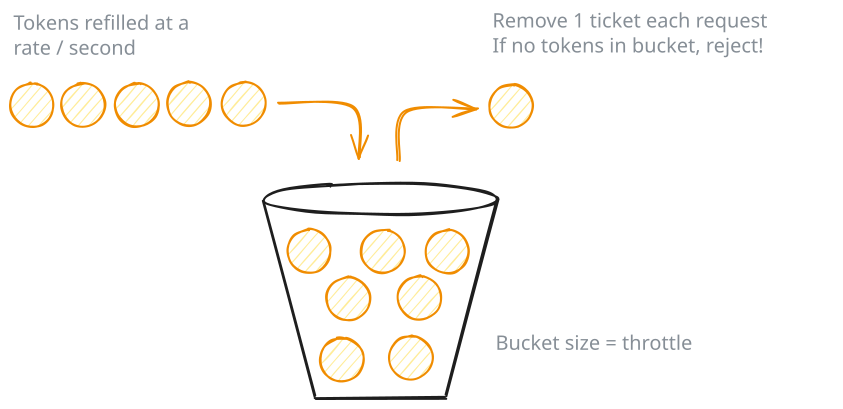

Common Problems
Rate Limiter
Understanding the Problem
🚦 What is a Rate Limiter?
A rate limiter controls how many requests a client can make to an API within a specific time window. When a request comes in, the rate limiter checks if the client has exceeded their quota. If they're under the limit, the request proceeds. If they've hit the cap, the request gets rejected. This protects APIs from abuse and ensures fair resource allocation across clients.
Requirements
When the interview starts, you'll get something that looks like this:
"You're building an in-memory rate limiter for an API gateway. The system receives configuration from an external service that provides rate limiting rules per endpoint. Each endpoint can have its own limit with a specific algorithm. Here's an example configuration for one endpoint:{ "endpoint": "/search", "algorithm": "TokenBucket", "algoConfig": { "capacity": 1000, "refillRatePerSecond": 10 } }This config allows bursts up to 1000 requests, refilling at 10 requests per second.Your job is to build the in-memory rate limiter that enforces these rules."
Clarifying Questions
While this gave us a decent understanding of the problem, you'll want to spend some time asking the interviewer clarifying questions to ensure you have a complete understanding of the system you are building. Here's how the conversation might play out:
You: "I see the configuration includes algorithm-specific parameters. Are there different parameter sets for different algorithms?"Interviewer: "Yah, different algorithms need different parameters. So the algoConfig object always exists, but the parameters inside it vary."
Good. Now you know the config is heterogeneous. Different algorithms need different parameters.
You: "When a request comes in, what information do we receive? Client ID and endpoint, or something else?"Interviewer: "Yes, exactly. Each request provides a client ID and an endpoint. The client ID is just a string that uniquely identifies who's making the request."
You: "What should we return when checking a request? Just allowed/denied, or more detail?"Interviewer: "Return three things: whether it's allowed, how many requests remain in their quota, and if denied, when they can retry."
Now you know the return type needs structure, not just a boolean.
You: "What happens if a request comes in for an endpoint we don't have configuration for?"Interviewer: "Good question. Fall back to a default configuration. Don't reject requests just because we're missing config."
You: "Should the system handle concurrent requests from multiple threads?"Interviewer: "Don't worry about it to start. We'll get to it if we have time."
This is a common interviewer pattern. They'll say "don't worry about X" to let you start with something simple and get the core logic working first. It's usually not because they don't care about that aspect, it's because they want to see if you can build a clean foundation, then extend it later. If you finish the basic implementation with time to spare, they'll often circle back with "now how would you handle X?" That's your cue to discuss how you'd extend the design. We cover common extensions (including thread safety) in the extensibility section at the end.
You: "Just to clarify scope, are we building distributed rate limiting across multiple servers, or single-process in-memory?"Interviewer: "Single process, in-memory. Keep it simple."
That's a huge simplification. No network coordination, no shared state across machines.
Designing a distributed rate limiter is a common system design interview question. You can see our breakdown via Design a Distributed Rate Limiter.
You: "And the configuration, is it dynamic, or loaded once at startup?"Interviewer: "Loaded at startup. Don't worry about hot-reloading config while the system is running."
Perfect. You've scoped out what not to build.
Final Requirements
After that back-and-forth, here's what you'd write on the whiteboard:
Final Requirements
Requirements:
1. Configuration is provided at startup (loaded once)
2. System receives requests with (clientId: string, endpoint: string)
3. Each endpoint has a configuration specifying:
- Algorithm to use (e.g., "TokenBucket", "SlidingWindowLog", etc.)
- Algorithm-specific parameters (e.g., capacity, refillRatePerSecond for Token Bucket)
4. System enforces rate limits by checking clientId against the endpoint's configuration
5. Return structured result: (allowed: boolean, remaining: int, retryAfterMs: long | null)
6. If endpoint has no configuration, use a default limit
Out of scope:
- Distributed rate limiting (Redis, coordination)
- Dynamic configuration updates
- Metrics and monitoring
- Config validation beyond basic checksCore Entities and Relationships
Now that the requirements are clear, we need to figure out what objects make up the system. The trick is scanning the requirements for nouns that represent things with behavior or state. We start by considering each of the nouns in our requirements as candidates, pruning until we have a list of entities that make sense to model.
The candidates are:
Request - Requests come into our system, so should we model them? Not really. The request is external. We receive (clientId, endpoint) as strings and immediately use them for lookup. There's no request object to maintain or rules to enforce about requests themselves. This stays as method parameters, not a class.
Client - Clients make requests, but the client itself is external to our system. The client ID is just a key we use to track per-client state (like how many tokens they have left). We don't manage client lifecycles or client properties. Not an entity.
Endpoint - Endpoints have configuration, but an endpoint itself is just a label. It's a string we use to look up which algorithm to apply. Not an entity.
Rate Limiting Algorithm - This is definitely an entity. Each algorithm (Token Bucket, Sliding Window Log, etc.) has algorithm-specific configuration, per-key state that varies by algorithm, and its own allow/deny logic. Different algorithms are different classes.
RateLimiter - Something needs to orchestrate the system. When a request arrives, something looks up the endpoint's configuration, picks the right algorithm instance, and delegates to it. This is the entry point. Clear entity.
RateLimitResult - We need to return three pieces of data: allowed, remaining, and retryAfterMs (milliseconds until retry, only present when denied). This is a structured return type, which makes it a value object entity rather than juggling loose primitives.
RateLimitResult doesn't need to be a class in every language. In TypeScript, a type or interface works fine. In Go, a struct. In Python with type hints, a dataclass or TypedDict. The important thing is having a structured, type-safe way to return multiple values. Use whatever your language makes natural. In this breakdown, we'll show it as a class because that's universal across languages, but adapt to your interview language. All that matters is we have a type safe way to return multiple values.
After filtering, we're left with three entities:
| Entity | Responsibility |
|---|---|
| RateLimiter | The orchestrator and entry point for the system. It receives incoming requests with client IDs and endpoints, looks up the appropriate endpoint configuration, and delegates to the right algorithm instance to make the rate limiting decision. It owns the collection of algorithm instances (one per configured endpoint) and handles fallback to a default configuration when requests hit endpoints we don't have specific rules for. |
| Limiter (interface) | Defines the contract that all rate limiting algorithms must follow. The interface has a single method: allow(key) which returns a RateLimitResult. Each concrete algorithm—Token Bucket, Sliding Window Log, etc.—implements this interface with its own logic and per-key state management approach. |
| RateLimitResult | A value object that packages up the rate limiting decision along with metadata. It contains three fields: whether the request is allowed, how many requests remain in the quota, and how many milliseconds until retry if denied. Once created, it's immutable. |
The relationships between these entities are straightforward. RateLimiter holds a map from endpoint strings to instantiated Limiter instances. When a request comes in, RateLimiter delegates the actual rate limiting logic to the appropriate Limiter implementation. The question of how RateLimiter creates the right Limiter from heterogeneous config data is something we'll address when we get to class design.
Class Design
With our entities identified, it's time to define their interfaces. What state does each one hold, and what methods does it expose?
We'll work top-down, starting with RateLimiter since it's the entry point, then drilling into the supporting classes.
For each class, we'll derive both state and behavior directly from requirements by asking: what does this class need to remember, and what operations must it support?
RateLimiter
RateLimiter is the facade that external code interacts with. Let's derive its state from requirements:
| Requirement | What RateLimiter must track |
|---|---|
| "Each endpoint has a configuration specifying algorithm and parameters" | Map from endpoint to configuration |
| "System enforces rate limits by checking clientId against endpoint's configuration" | Need algorithm instances to delegate to |
| "If endpoint has no configuration, use a default limit" | Default limiter instance |
| "Configuration is provided at startup" | Need way to create limiters from config |
This gives us:
RateLimiter State
class RateLimiter:
- limiters: Map<string, Limiter>
- defaultLimiter: LimiterLet's break down why each field exists:
Why limiters as a map. This field maps endpoint names (like "/search" or "/upload") to their corresponding limiter instances. When a request for "/search" arrives, we can look up the limiter for that specific endpoint in constant time.
Why defaultLimiter. When a request hits an endpoint we don't have specific configuration for, we need a fallback behavior rather than rejecting the request outright. This field stores one default limiter instance that all unknown endpoints share, ensuring every request gets rate limited even if we don't have custom rules for it.
Now for operations. What does the outside world need to do?
| Need from requirements | Method on RateLimiter |
|---|---|
| "System receives requests with (clientId, endpoint)" | allow(clientId, endpoint) as the main entry point |
That's it. One public method. The entire API.
RateLimiter
class RateLimiter:
- limiters: Map<string, Limiter>
- defaultLimiter: Limiter
+ RateLimiter(configs, defaultConfig)
+ allow(clientId, endpoint) -> RateLimitResultThe constructor takes a list of endpoint configurations and a default config. It needs to create the appropriate Limiter implementation for each config based on the algorithm type. This is a creation problem - given heterogeneous config data, construct the right type of limiter.
We'll use the Factory pattern to encapsulate this creation logic. The factory will handle parsing config data and instantiating the correct limiter implementation. We'll define the factory's interface next and implement it in detail during the implementation phase.
The allow method looks up the limiter for the endpoint (or uses default) and delegates to it.
Some candidates add methods like getConfig(endpoint) or updateConfig(endpoint, config) thinking they're being thorough. Unless requirements explicitly mention querying or updating config, don't add these methods. They violate YAGNI and aren't needed for the core workflow.
LimiterFactory
Now that we know we need a Factory pattern, let's define its interface.
The constructor takes a list of endpoint configurations and needs to create the appropriate Limiter implementation for each config based on the algorithm type.
LimiterFactory
class LimiterFactory:
+ create(configData) -> LimiterThe factory's responsibility is simple: take raw config data (a map or JSON object like {"endpoint": "/search", "algorithm": "TokenBucket", "algoConfig": {...}}), inspect the algorithm discriminator, extract the algorithm-specific parameters from the nested algoConfig object, and pass them directly to the correct Limiter constructor.
Limiter
The Limiter interface defines the contract all algorithms must follow. Algorithms like Token Bucket and Sliding Window Log will implement this interface.
Limiter
interface Limiter:
allow(key) -> RateLimitResultThat's the entire interface, just one method. It takes a key (which will be the clientId in our system) and returns whether the request is allowed along with additional metadata packaged in a RateLimitResult.
You might be wondering whether we should use an abstract base class instead of an interface, potentially sharing some common state or helper methods. The problem is that different algorithms need fundamentally different per-key state. Look at an example of what two different algorithms need to track per client:
Token Bucket per-key state:
- tokens: double (how many tokens remain)
- lastRefillTime: long (when we last refilled)
Sliding Window Log per-key state:
- timestamps: Queue<long> (history of all requests in the window)Token Bucket needs two fields, Sliding Window Log needs a queue, Fixed Window Counter needs a count and timestamp. There's no common structure to pull into a base class. You'd end up with an abstract base class that has no fields and no shared methods, which is just an interface with extra steps. An interface keeps things clean and doesn't force artificial commonality where none exists.
RateLimitResult
The final piece of our class design is the structured return type that packages up the rate limiting decision:
RateLimitResult
class RateLimitResult:
- allowed: boolean
- remaining: int
- retryAfterMs: long | null
+ RateLimitResult(allowed, remaining, retryAfterMs)
+ isAllowed() -> boolean
+ getRemaining() -> int
+ getRetryAfterMs() -> long | nullRateLimitResult is an immutable value object. Once created, it never changes. The retryAfterMs field specifies how many milliseconds the client should wait before retrying. It's null when the request is allowed (no need to retry) and contains a positive millisecond value when denied. This explicit nullable design is cleaner than using 0 as a sentinel value. The unit in the field name prevents confusion about whether it's milliseconds, seconds, or an absolute timestamp.
The remaining field represents how many requests remain in the quota after this request is processed. If a client has a limit of 100 requests and this is their 3rd request, remaining will be 97 (they've consumed 3, have 97 left).
This is what callers receive when they call RateLimiter.allow() to check whether a request should proceed.
Final Class Design
Here's how the pieces work together: RateLimiter receives requests with client IDs and endpoints, looks up the appropriate limiter instance for that endpoint (or falls back to default), and delegates the actual rate limiting decision to the limiter. LimiterFactory handles creation by parsing raw config data, extracting the algorithm discriminator and parameters, and instantiating the correct Limiter implementation. Each Limiter implementation (TokenBucket, SlidingWindowLog, etc.) tracks its own per-client state using whatever data structure fits its algorithm and makes allow/deny decisions based on that state. RateLimitResult packages the decision with metadata about remaining quota and retry timing.
Final Class Design
class RateLimiter:
- limiters: Map<string, Limiter>
- defaultLimiter: Limiter
+ RateLimiter(configs, defaultConfig)
+ allow(clientId, endpoint) -> RateLimitResult
class LimiterFactory:
+ create(configData) -> Limiter
interface Limiter:
+ allow(key) -> RateLimitResult
class RateLimitResult:
- allowed: boolean
- remaining: int
- retryAfterMs: long | null
+ RateLimitResult(allowed, remaining, retryAfterMs)
+ isAllowed() -> boolean
+ getRemaining() -> int
+ getRetryAfterMs() -> long | nullThe design uses the Factory pattern to handle heterogeneous configuration and the Strategy pattern to allow different rate limiting algorithms. RateLimiter orchestrates while each Limiter implementation manages its own per-key state independently.
Implementation
With the class design complete, it's time to move on to the implementation. Before starting, check with your interviewer about their preference. Some might want working code in a specific language, while most just want pseudocode, or even just talking through the logic. We'll use pseudocode here as it's what's most common in LLD interviews.
For each method, we'll follow a pattern:
- Core logic - The happy path when everything works
- Edge cases - Invalid inputs, boundary conditions, error handling
The most interesting implementations are the factory's creation logic, RateLimiter.allow(), and the algorithm-specific Limiter classes.
LimiterFactory
Before we implement RateLimiter, we need the factory that creates limiters from config data. Recall from class design that the factory's job is to parse raw config data and instantiate the correct Limiter implementation.
LimiterFactory.create
create(externalConfig)
algorithm = externalConfig["algorithm"]
algoConfig = externalConfig["algoConfig"]
switch algorithm
case "TokenBucket":
return new TokenBucketLimiter(
algoConfig["capacity"],
algoConfig["refillRatePerSecond"]
)
case "SlidingWindowLog":
return new SlidingWindowLogLimiter(
algoConfig["maxRequests"],
algoConfig["windowMs"]
)
default:
throw new IllegalArgumentException("Unknown algorithm: " + algorithm)This is a straightforward switch-based dispatch pattern. The algorithm field acts as a discriminator that tells us which path to take. For each case, we extract the algorithm-specific parameters from the nested algoConfig object and pass them directly to the limiter constructor. If we encounter an unknown algorithm, we fail fast with a clear error rather than silently doing the wrong thing.
You need a factory when you have multiple classes that implement the same interface, and you need to pick which one to instantiate based on runtime data. In our case, we have TokenBucketLimiter and SlidingWindowLogLimiter (both implement Limiter), and we need to decide which one to create by reading the algorithm field from config. Without a factory, this creation logic would be scattered across the codebase wherever we need to create limiters. The factory centralizes it in one place.
This could evolve to a registry pattern if algorithms become pluggable at runtime. You'd have a Map<String, AlgorithmConstructor> and register constructors at startup. But for two algorithms in an interview, the switch is clearer and more direct.
RateLimiter
Now we can implement RateLimiter's methods. Let's start with the constructor:
RateLimiter constructor
RateLimiter(configs, defaultConfig)
factory = new LimiterFactory()
limiters = new HashMap()
for externalConfig in configs
endpoint = externalConfig["endpoint"]
limiter = factory.create(externalConfig)
limiters[endpoint] = limiter
defaultLimiter = factory.create(defaultConfig)The constructor creates a factory instance, then iterates through all the endpoint configurations we received. Each externalConfig is the raw JSON object that includes both the endpoint name and the algorithm configuration in algoConfig. We extract the endpoint to use as the map key, then pass the entire external config to the factory which will parse it and create the appropriate limiter. We also create the default limiter using the default configuration. All of this creation work happens once at startup—eager instantiation rather than lazy creation.
We're using eager instantiation here, which is creating all limiter objects upfront in the constructor. The alternative is lazy creation, where you only create a limiter the first time that endpoint receives a request. Eager is simpler since there is no need for double-checked locking or synchronized blocks around limiter creation. For typical scales (dozens to hundreds of endpoints), the memory overhead is negligible—a few hundred small objects created at startup. Lazy creation makes sense if you have thousands of endpoints where most never receive traffic, but for interview scope, eager instantiation is cleaner and easier to reason about.
With all the setup done in the constructor, the allow method becomes straightforward:
allow
allow(clientId, endpoint)
limiter = limiters.get(endpoint)
if limiter == null
limiter = defaultLimiter
return limiter.allow(clientId)This is a simple lookup operation. We check the map for a limiter configured for this specific endpoint. If we find one, we use it. If the endpoint isn't in our map (meaning we don't have specific configuration for it), we fall back to the default limiter. Then we delegate to whichever limiter we selected, passing the clientId as the key for per-client rate limiting.
Rate Limiting Algorithms
Now we need to implement the actual rate limiting algorithms. There are several common approaches, each with different tradeoffs:
| Algorithm | Per-Key State | Tradeoff |
|---|---|---|
| Token Bucket | (tokens, lastRefillTime) | Allows bursts, smooth refill |
| Sliding Window Log | List<timestamp> | Perfect accuracy, high memory |
| Fixed Window Counter | (count, windowStart) | Simple, boundary effects |
| Sliding Window Counter | (currentCount, prevCount, windowStart) | Balanced accuracy/memory |
We'll implement Token Bucket and Sliding Window Log—the two most commonly asked in interviews.
Most will pick one, maybe two. Don't try to code all four, you'll run out of time. We show both Token Bucket and Sliding Window Log here because they're the most commonly requested, but you'd typically only implement one during the actual interview.
TokenBucketLimiter
Token Bucket is a classic rate limiting algorithm that provides smooth traffic shaping. The concept is pretty intuitive, each client has a bucket that can hold a certain number of tokens. These tokens refill at a constant rate over time, like water dripping into a bucket. Each request consumes one token. If tokens are available, the request proceeds and the token count decreases. If the bucket is empty, the request is denied. This allows for bursts up to the bucket capacity while maintaining an average rate over time.
For example, a bucket might hold 100 tokens (allowing bursts up to 100 requests) and refill at 10 tokens per second (steady rate of 10 requests/second). A client can make 100 requests immediately, then must wait for tokens to refill.

Token Bucket
Companies like Stripe use this approach because it naturally accommodates bursty API traffic.
State Design
Let's think about what state we need to track. We have configuration that applies to all clients (capacity and refill rate), and we have per-client state (how many tokens each client currently has).
TokenBucketLimiter state
class TokenBucketLimiter implements Limiter:
- capacity: int
- refillRatePerSecond: int
- buckets: Map<string, TokenBucket>The capacity and refillRatePerSecond come from config and never change. Every client gets a bucket with this same capacity, and all buckets refill at this same rate.
The buckets map is where we track per-client state. Each key (client ID) gets its own bucket. But what does a bucket need to track?
TokenBucket state
class TokenBucket:
- tokens: double
- lastRefillTime: longWe need tokens to know how many tokens are currently available. We use a double instead of an int because tokens refill continuously. For example, 0.5 tokens is a valid state.
We need lastRefillTime because we're not running a background thread that refills buckets on a schedule. Instead, when a request comes in, we look at how much time has passed since we last updated this bucket and calculate how many tokens should have accumulated. This timestamp tells us when we last did that calculation.
Do we need a background thread to refill buckets? No, we don't. A timer-based approach would need to iterate through all buckets periodically which is wasteful if most clients are inactive. The on-demand approach only does work when requests actually arrive. It's simpler to implement and more efficient for sparse traffic patterns. It's also what is done in most production systems.
Constructor
The constructor's job is to store the parameters and initialize the empty buckets map:
TokenBucketLimiter constructor
TokenBucketLimiter(capacity: int, refillRatePerSecond: int)
this.capacity = capacity
this.refillRatePerSecond = refillRatePerSecond
this.buckets = new HashMap()We start with an empty map because we don't know which clients will make requests yet. Buckets are created on-demand the first time each client makes a request.
The allow() Method
Now for the core logic. When a request comes in, we need to:
- Get or create the bucket for this client
- Refill tokens based on elapsed time
- Check if we have enough tokens to allow the request
- Consume a token if allowed, or calculate retry time if denied
Let's build this step by step.
Step 1: Get or create the bucket
allow - step 1
allow(key)
bucket = getOrCreateBucket(key)
// ... more to comeThe first time we see a key, we need to create a bucket for it:
getOrCreateBucket helper
getOrCreateBucket(key)
if !buckets.contains(key)
buckets[key] = new TokenBucket(capacity, currentTimeMillis())
return buckets[key]New buckets start full (with capacity tokens) and their lastRefillTime is set to "now". This means a first-time client gets their full burst capacity immediately.
This on-demand bucket creation has a hidden memory leak. Buckets are never removed from the map. As more unique client IDs make requests, the buckets map grows without bound. In production, you'd need an eviction policy to remove inactive clients' buckets after some timeout period. We discuss strategies for handling this in the fourth extension at the end of this breakdown.
Step 2: Refill tokens based on elapsed time
Now we need to figure out how many tokens have accumulated since we last checked this bucket:
allow - step 2
allow(key)
bucket = getOrCreateBucket(key)
now = currentTimeMillis()
elapsed = now - bucket.lastRefillTime
tokensToAdd = (elapsed * refillRatePerSecond) / 1000
bucket.tokens = min(capacity, bucket.tokens + tokensToAdd)
bucket.lastRefillTime = now
// ... more to comeThe math here is straightforward: if 1000ms has passed and our refill rate is 10 tokens/second, then we should add (1000 * 10) / 1000 = 10 tokens. We divide by 1000 to convert milliseconds to seconds. We cap at capacity because buckets can't hold more than their maximum. Then we update lastRefillTime to "now" so our next calculation starts from this point.
Step 3: Check if we can allow the request
Each request needs one token. If we have at least one token after refilling, the request is allowed:
allow - step 3
allow(key)
bucket = getOrCreateBucket(key)
now = currentTimeMillis()
elapsed = now - bucket.lastRefillTime
tokensToAdd = (elapsed * refillRatePerSecond) / 1000
bucket.tokens = min(capacity, bucket.tokens + tokensToAdd)
bucket.lastRefillTime = now
if bucket.tokens >= 1
// allow the request
else
// deny the requestStep 4a: Allow the request (if tokens available)
If we have tokens, consume one and return success:
allow - allowing the request
if bucket.tokens >= 1
bucket.tokens -= 1
return new RateLimitResult(allowed = true, remaining = floor(bucket.tokens), retryAfterMs = null)We decrement the token count, then tell the caller how many tokens remain (floored to an integer for the API response). retryAfterMs is null because the request succeeded—no need to retry.
Step 4b: Deny the request (if insufficient tokens)
If we don't have a full token, we deny the request and calculate when the client should retry:
allow - denying the request
else
tokensNeeded = 1 - bucket.tokens
retryAfterMs = ceil((tokensNeeded * 1000) / refillRatePerSecond)
return new RateLimitResult(allowed = false, remaining = 0, retryAfterMs = retryAfterMs)Let's say the bucket has 0.3 tokens. We need 1 - 0.3 = 0.7 more tokens. If our refill rate is 10 tokens/second, then we need to wait (0.7 * 1000) / 10 = 70 milliseconds for enough tokens to accumulate. We multiply by 1000 to convert seconds to milliseconds. We round up with ceil() to avoid telling a client to retry too soon.
Putting it all together, our pseudocode TokenBucketLimiter implementation looks like this. You can see the complete implementation in each of the common languages at the bottom of this section, but for most interviews, pseudocode is enough.
TokenBucketLimiter - complete
class TokenBucketLimiter implements Limiter:
capacity: int
refillRatePerSecond: int
buckets: Map<string, TokenBucket>
TokenBucketLimiter(capacity: int, refillRatePerSecond: int)
this.capacity = capacity
this.refillRatePerSecond = refillRatePerSecond
this.buckets = new HashMap()
allow(key)
bucket = getOrCreateBucket(key)
now = currentTimeMillis()
elapsed = now - bucket.lastRefillTime
tokensToAdd = (elapsed * refillRatePerSecond) / 1000
bucket.tokens = min(capacity, bucket.tokens + tokensToAdd)
bucket.lastRefillTime = now
if bucket.tokens >= 1
bucket.tokens -= 1
return new RateLimitResult(
allowed: true,
remaining: floor(bucket.tokens),
retryAfterMs: null
)
else
tokensNeeded = 1 - bucket.tokens
retryAfterMs = ceil((tokensNeeded * 1000) / refillRatePerSecond)
return new RateLimitResult(
allowed: false,
remaining: 0,
retryAfterMs: retryAfterMs
)
getOrCreateBucket(key)
if !buckets.contains(key)
buckets[key] = new TokenBucket(capacity, currentTimeMillis())
return buckets[key]
class TokenBucket:
tokens: double
lastRefillTime: long
TokenBucket(initialTokens, time)
this.tokens = initialTokens
this.lastRefillTime = timeSlidingWindowLogLimiter
Sliding Window Log provides precise rate limiting by tracking the exact timestamp of each request in a rolling window. The algorithm maintains a log of timestamps for each client. When a new request arrives, we first remove any timestamps that have fallen outside our time window (they're now "stale"), then count how many timestamps remain. If we're under the limit, the request is allowed and we add the current timestamp to the log. If we're at or over the limit, the request is denied.
This gives perfect accuracy—you're always looking at exactly the last N minutes of requests. The downside is memory usage. For a key making 1000 requests per minute, you need to store 1000 timestamps.

Sliding Window Log
State Design
Again, we have configuration that's the same for all clients, and per-client state tracking their request history.
SlidingWindowLogLimiter state
class SlidingWindowLogLimiter implements Limiter:
- maxRequests: int
- windowMs: long
- logs: Map<string, RequestLog>The maxRequests is how many requests a client can make within the time window. The windowMs is the size of our rolling window in milliseconds. For example, "100 requests per 60000ms" means a client can make 100 requests in any sliding 60-second period.
The logs map tracks each client's request history:
RequestLog state
class RequestLog:
- timestamps: Queue<long>We use a queue (not a list) because we only ever add to the end and remove from the front—classic FIFO behavior. The queue holds timestamps of recent requests in chronological order. Older timestamps are at the front, newer ones at the back.
We use a queue so we can efficiently remove old timestamps from the front while adding new ones to the back. A queue gives us O(1) operations for both. A regular list would require shifting elements when removing from the front which is O(n) operations.
Constructor
The constructor stores the parameters and initializes the empty logs map:
SlidingWindowLogLimiter constructor
SlidingWindowLogLimiter(maxRequests: int, windowMs: long)
this.maxRequests = maxRequests
this.windowMs = windowMs
this.logs = new HashMap()Logs are created on-demand when each client makes their first request.
The allow() Method
When a request comes in, we need to:
- Get or create the log for this client
- Remove stale timestamps that fall outside the window
- Check if we're under the limit
- Add the current timestamp if allowed, or calculate retry time if denied
Let's walk through it step by step.
Step 1: Get or create the log
allow - step 1
allow(key)
log = getOrCreateLog(key)
// ... more to comeThe helper creates an empty log for new clients:
getOrCreateLog helper
getOrCreateLog(key)
if !logs.contains(key)
logs[key] = new RequestLog(new LinkedList())
return logs[key]A new client starts with an empty queue—no request history yet.
Step 2: Remove stale timestamps
Before we can count recent requests, we need to clean up the log by removing any timestamps that are now outside our sliding window:
allow - step 2
allow(key)
log = getOrCreateLog(key)
now = currentTimeMillis()
cutoff = now - windowMs
while log.timestamps.isNotEmpty() && log.timestamps.peek() < cutoff
log.timestamps.poll()
// ... more to comeThe cutoff is the earliest timestamp we care about. If our window is 60000ms and it's currently t=100000, then the cutoff is t=40000. Anything older than that falls outside the window.
We peek at the front of the queue (the oldest timestamp) and if it's before the cutoff, we remove it with poll(). We repeat until the front timestamp is within the window or the queue is empty.
Why peek() then poll()? peek() lets us look at the front element without removing it, so we can check if it's stale. If it is, poll() removes and discards it. This is more efficient than checking after removal.
Step 3: Check if we're under the limit
After cleanup, the queue contains only timestamps from the current window. The size of the queue tells us how many requests this client has made recently:
allow - step 3
allow(key)
log = getOrCreateLog(key)
now = currentTimeMillis()
cutoff = now - windowMs
while log.timestamps.isNotEmpty() && log.timestamps.peek() < cutoff
log.timestamps.poll()
if log.timestamps.size() < maxRequests
// allow the request
else
// deny the requestIf the queue has fewer than maxRequests timestamps, we have capacity. Otherwise, the client has exhausted their quota.
Step 4a: Allow the request (if under limit)
If we're under the limit, we add the current timestamp to the log and return success:
allow - allowing the request
if log.timestamps.size() < maxRequests
log.timestamps.add(now)
return new RateLimitResult(allowed = true, remaining = maxRequests - log.timestamps.size(), retryAfterMs = null)We add "now" to the end of the queue (the back), then calculate how many requests remain. Since we just added one, the remaining count is maxRequests - currentSize. The retryAfterMs is null because the request succeeded—no need to retry.
Step 4b: Deny the request (if at limit)
If we're at the limit, we deny the request and tell the client when they can retry:
allow - denying the request
else
oldestTimestamp = log.timestamps.peek()
retryAfterMs = (oldestTimestamp + windowMs) - now
return new RateLimitResult(allowed = false, remaining = 0, retryAfterMs = retryAfterMs)The oldest timestamp in the queue (at the front) is the one that will age out first. Once it falls outside the window, we'll have capacity again. So we calculate when that timestamp will reach the window boundary: oldestTimestamp + windowMs. The time until then is our retryAfterMs.
For example, if the oldest timestamp is t=50000, our window is 60000ms, and it's now t=105000, then:
- The oldest timestamp will age out at t=50000+60000=110000
- We should retry in 110000-105000=5000ms
Here's the full pseudocode implementation:
SlidingWindowLogLimiter - complete
class SlidingWindowLogLimiter implements Limiter:
maxRequests: int
windowMs: long
logs: Map<string, RequestLog>
SlidingWindowLogLimiter(maxRequests: int, windowMs: long)
this.maxRequests = maxRequests
this.windowMs = windowMs
this.logs = new HashMap()
allow(key)
log = getOrCreateLog(key)
now = currentTimeMillis()
cutoff = now - windowMs
while log.timestamps.isNotEmpty() && log.timestamps.peek() < cutoff
log.timestamps.poll()
if log.timestamps.size() < maxRequests
log.timestamps.add(now)
return new RateLimitResult(
allowed: true,
remaining: maxRequests - log.timestamps.size(),
retryAfterMs: null
)
else
oldestTimestamp = log.timestamps.peek()
retryAfterMs = (oldestTimestamp + windowMs) - now
return new RateLimitResult(
allowed: false,
remaining: 0,
retryAfterMs: retryAfterMs
)
getOrCreateLog(key)
if !logs.contains(key)
logs[key] = new RequestLog(new LinkedList())
return logs[key]
class RequestLog:
timestamps: Queue<long>
RequestLog(queue)
this.timestamps = queueComplete Code Implementation
While most companies only require pseudocode during interviews, some do ask for full implementations of at least a subset of the classes or methods. Below is a complete working implementation in common languages for reference.
Python
from typing import Dict, List
class RateLimiter:
def __init__(self, configs: List[dict], default_config: dict):
factory = LimiterFactory()
self._limiters: Dict[str, Limiter] = {}
for config in configs:
endpoint = config.get("endpoint")
if endpoint is None:
continue
limiter = factory.create(config)
self._limiters[endpoint] = limiter
self._default_limiter = factory.create(default_config)
def allow(self, client_id: str, endpoint: str):
limiter = self._limiters.get(endpoint, self._default_limiter)
return limiter.allow(client_id)
Verification
The next step in any interview after completing the implementation is to verify the logic. This is a good way to catch bugs before your interviewer finds them.
Setup:
- RateLimiter constructed with config for "/search": TokenBucket with capacity=10, refillRatePerSecond=1
- Constructor created TokenBucketLimiter(10, 1) and stored it in limiters["/search"]
- Client "user123" makes requests
Request 1 at t=0:
allow('user123', '/search')
limiters.get('/search') returns TokenBucketLimiter(10, 1)
TokenBucketLimiter.allow('user123'):
- getOrCreateBucket('user123') creates bucket: tokens=10, lastRefillTime=0
- now=0, elapsed=0, tokensToAdd=(0 * 1) / 1000 = 0
- bucket.tokens=10 (no change)
- tokens >= 1, consume one: bucket.tokens=9
- Return RateLimitResult(true, 9, null)Request allowed. 9 tokens remain.
Request 2 at t=500ms (0.5 seconds later):
allow('user123', '/search')
TokenBucketLimiter.allow('user123'):
- Bucket exists: tokens=9, lastRefillTime=0
- now=500, elapsed=500, tokensToAdd=(500 * 1) / 1000 = 0.5
- bucket.tokens=min(10, 9+0.5)=9.5
- bucket.lastRefillTime=500
- tokens >= 1, consume one: bucket.tokens=8.5
- Return RateLimitResult(true, 8, null)Request allowed. Half a token refilled. 8 tokens remain.
10 rapid requests, depleting the bucket:
After 10 more requests in quick succession (no time for refill), bucket has ~0 tokens left.
Request when bucket is empty:
allow('user123', '/search')
TokenBucketLimiter.allow('user123'):
- Bucket: tokens=0.1, lastRefillTime=1000
- now=1100, elapsed=100, tokensToAdd=(100 * 1) / 1000 = 0.1
- bucket.tokens=min(10, 0.1+0.1)=0.2
- tokens < 1, request denied
- tokensNeeded=1-0.2=0.8
- retryAfterMs=ceil((0.8 * 1000) / 1) = 800ms
- Return RateLimitResult(false, 0, 800)Request denied. Retry in 800ms when enough tokens refill.
This verifies the refill logic, consumption, and retry calculation all work correctly.
Extensibility
If there's time after implementation, interviewers will often ask "what if" questions to test whether your design can evolve. You typically won't implement these changes, you'll just explain where they'd fit.
The depth of this section depends on your level. Junior candidates often skip it. Mid-level candidates get one or two questions. Senior candidates might discuss several extensions in detail.
If you're a junior engineer, feel free to skip this section! Only continue if you're curious about more advanced topics.
Here are the most common extensions for rate limiters.
1. "How would you add a new rate limiting algorithm?"
The system is already designed for this. That's why we have the factory pattern.
"Adding a new algorithm requires two steps. First, implement the Limiter interface with the algorithm's logic, with a constructor that takes the parameters it needs. Second, add one case to the factory that extracts the parameters from raw config data and passes them to the limiter constructor. The RateLimiter orchestrator doesn't change. Existing limiters don't change."
Adding Fixed Window Counter
// Step 1: Implement the algorithm
class FixedWindowCounterLimiter implements Limiter:
maxRequests: int
windowMs: long
windows: Map<string, WindowState>
FixedWindowCounterLimiter(maxRequests: int, windowMs: long)
this.maxRequests = maxRequests
this.windowMs = windowMs
this.windows = new HashMap()
allow(key)
// ... implementation
// Step 2: Add factory case
create(externalConfig)
algorithm = externalConfig["algorithm"]
algoConfig = externalConfig["algoConfig"]
switch algorithm
case "TokenBucket":
// ... existing
case "SlidingWindowLog":
// ... existing
case "FixedWindowCounter": // NEW
return new FixedWindowCounterLimiter(
algoConfig["maxRequests"],
algoConfig["windowMs"]
)2. "How would you handle dynamic configuration updates?"
Right now config is loaded at startup. What if you want to change rate limits without restarting?
Approach
Add a reloadConfig(configs) method to RateLimiter that tears down all existing limiter instances and creates new ones from the updated configuration.
RateLimiter.reloadConfig
reloadConfig(configs, defaultConfig)
factory = new LimiterFactory()
newLimiters = new HashMap()
for config in configs
limiter = factory.create(config)
newLimiters[config.endpoint] = limiter
newDefaultLimiter = factory.create(defaultConfig)
// Atomic swap
this.limiters = newLimiters
this.defaultLimiter = newDefaultLimiterWhen the configuration service pushes new config (maybe via a config watcher or polling mechanism), you call reloadConfig(). All the old limiters are discarded and fresh ones take their place. The swap is atomic, so there's no moment where the system is in an inconsistent state.
This approach is simple to implement and reason about. You're using the exact same factory creation logic that runs at startup, so there's no special-case code for updates. The atomic swap means you don't need to worry about partially-updated state.
It also handles all types of config changes uniformly. Whether you're changing a rate limit value, switching algorithms entirely, or adding/removing endpoints, the logic is the same: throw everything away and rebuild.
Challenges
The big downside is you lose all per-key state. If Client A has used 90 out of 100 tokens and you reload config, their bucket resets to 100 tokens. They get a fresh start even though they were almost at their limit. Same with Sliding Window Log—all request history is wiped.
This can be acceptable in some scenarios. If you're increasing limits to handle a traffic spike, giving everyone a fresh start is probably fine. But if you're decreasing limits because of abuse, suddenly giving abusers a clean slate defeats the purpose.
For systems where config changes are rare (maybe once per deployment) and brief state loss is acceptable, this is a perfectly reasonable choice.
Approach
Instead of destroying and recreating limiters, add an updateConfig() method to the Limiter interface that allows each algorithm to update its parameters while preserving per-key state.
Updated Limiter interface
interface Limiter:
allow(key) -> RateLimitResult
updateConfig(configData) // NEWEach limiter implementation decides how to handle updates:
TokenBucketLimiter.updateConfig
updateConfig(algoConfig)
newCapacity = algoConfig["capacity"]
newRefillRatePerSecond = algoConfig["refillRatePerSecond"]
// Update parameters
this.capacity = newCapacity
this.refillRatePerSecond = newRefillRatePerSecond
// Adjust existing buckets to respect new capacity
for bucket in buckets.values()
if bucket.tokens > newCapacity
bucket.tokens = newCapacityWhen RateLimiter receives new config, it updates the appropriate limiter instead of replacing it:
RateLimiter.updateEndpointConfig
updateEndpointConfig(endpoint, configData)
limiter = limiters.get(endpoint)
if limiter != null
limiter.updateConfig(configData)
else
// New endpoint - create limiter
limiter = factory.create(configData)
limiters[endpoint] = limiterThis preserves per-key state across configuration changes. If you decrease Token Bucket capacity from 100 to 50, clients who had 30 tokens still have 30 tokens (not a fresh 50). If you increase the limit from 50 to 100, clients who had 10 tokens still have 10 tokens and need to wait for refill. The system's memory of recent activity is maintained.
Each algorithm can handle updates intelligently. Token Bucket can adjust capacity and refill rate while keeping existing token counts. Sliding Window Log can change maxRequests or windowMs without clearing the timestamp history—it just recalculates whether clients are over the new limit based on existing data.
This also allows for gradual rollout strategies. You can incrementally adjust limits and see the impact without everyone getting a reset. If you're trying to find the right balance between availability and protection, this gives you smoother feedback.
Challenges
The implementation is more complex. Each algorithm needs custom update logic. You have to think through edge cases: what happens if you switch algorithms entirely (Token Bucket to Sliding Window Log)? In that case, you probably do need to replace the limiter since they have incompatible state.
You also need to handle the case where config updates arrive while requests are being processed. You might need to synchronize config updates with the rate limiting logic to avoid race conditions where half of a request's logic runs with old config and half with new config.
The added complexity is worth it for production systems where state continuity matters. If you're rate limiting API keys that cost money or protecting against abuse, preserving history across config changes is important.
The choice between these approaches depends on your requirements. For most interview contexts, explaining both options and their tradeoffs is sufficient. The second approach demonstrates senior-level thinking about state management and graceful transitions.
3. "How would you handle thread safety for concurrent requests?"
Our current implementation isn't thread-safe. If two threads check the same client's rate limit simultaneously, we can have race conditions. For example, in Token Bucket, thread A reads bucket.tokens = 1, thread B reads bucket.tokens = 1, both see there's a token available, both decrement it, and now we've allowed two requests when we only had capacity for one.
"The standard solution is per-key locking. We use a ConcurrentHashMap for the buckets map and synchronize on the bucket object itself. When allow(key) is called, we atomically get or create the bucket using computeIfAbsent, then synchronize on that bucket for the check-and-update operation. The key insight is that we lock per client ID, not globally. Client A and Client B can check their limits concurrently—they only block each other if they're the same client."
Adding thread safety to TokenBucketLimiter
class TokenBucketLimiter implements Limiter:
capacity: int
refillRatePerSecond: int
buckets: ConcurrentHashMap<string, TokenBucket> // NEW - ConcurrentHashMap
TokenBucketLimiter(capacity: int, refillRatePerSecond: int)
this.capacity = capacity
this.refillRatePerSecond = refillRatePerSecond
this.buckets = new ConcurrentHashMap() // NEW
allow(key)
// Atomically get or create bucket
bucket = buckets.computeIfAbsent(key, k -> new TokenBucket(capacity, currentTimeMillis()))
// Synchronize on the bucket object itself
synchronized(bucket)
now = currentTimeMillis()
elapsed = now - bucket.lastRefillTime
tokensToAdd = (elapsed * refillRatePerSecond) / 1000
bucket.tokens = min(capacity, bucket.tokens + tokensToAdd)
bucket.lastRefillTime = now
// Calculate result values while holding lock
allowed = bucket.tokens >= 1
if allowed
bucket.tokens -= 1
remaining = floor(bucket.tokens)
retryAfterMs = null
else
tokensNeeded = 1 - bucket.tokens
remaining = 0
retryAfterMs = ceil((tokensNeeded * 1000) / refillRatePerSecond)
// Construct result object outside the lock
return new RateLimitResult(allowed, remaining, retryAfterMs)Why per-key locking? If we used a single lock for the entire limiter, every request would block every other request—even for different clients. Per-key locking allows Client A and Client B to be checked concurrently. Only requests for the same client block each other.
We synchronize on the bucket object itself rather than maintaining a separate locks map. This is simpler and the bucket provides a stable synchronization point since it's stored in a ConcurrentHashMap. The memory growth concern is about the buckets map itself (discussed in extension 4), not about managing separate lock objects.
Here's how you'd implement thread-safe per-key locking across different languages:
token_bucket_limiter.py
Python
from threading import Lock
from typing import Dict
import time
class TokenBucketLimiter:
def __init__(self, capacity: int, refill_rate_per_second: int):
self.capacity = capacity
self.refill_rate_per_second = refill_rate_per_second
self.buckets: Dict[str, TokenBucket] = {}
self._buckets_lock = Lock() # Lock for bucket creation
def allow(self, key: str) -> RateLimitResult:
# Get or create bucket atomically
with self._buckets_lock:
if key not in self.buckets:
self.buckets[key] = TokenBucket(
self.capacity,
time.time() * 1000
)
bucket = self.buckets[key]
# Synchronize on the bucket's own lock
with bucket.lock:
now = time.time() * 1000 # Convert to milliseconds
elapsed = now - bucket.last_refill_time
tokens_to_add = (elapsed * self.refill_rate_per_second) / 1000
bucket.tokens = min(self.capacity, bucket.tokens + tokens_to_add)
bucket.last_refill_time = now
if bucket.tokens >= 1:
bucket.tokens -= 1
allowed = True
remaining = int(bucket.tokens)
retry_after_ms = None
else:
tokens_needed = 1 - bucket.tokens
allowed = False
remaining = 0
retry_after_ms = int((tokens_needed * 1000) / self.refill_rate_per_second + 0.5)
# Return outside the lock
return RateLimitResult(
allowed=allowed,
remaining=remaining,
retry_after_ms=retry_after_ms
)
class TokenBucket:
def __init__(self, initial_tokens: float, time_ms: float):
self.tokens = initial_tokens
self.last_refill_time = time_ms
self.lock = Lock() # Each bucket has its own lockThe key pattern across all multi-threaded languages: each client key gets its own lock object, so different clients can be checked concurrently without blocking each other. Only requests for the same client block each other, which is exactly what we want.
4. "How would you handle memory growth from tracking many clients?"
As more clients make requests, our maps (buckets, logs) grow without bound. A system serving millions of users could run out of memory.
"We need an eviction policy. The simplest approach is to add a timestamp tracking last access time for each key. Periodically, a background thread scans the maps and removes entries that haven't been accessed in, say, 1 hour. Alternatively, we could use an LRU cache with a fixed capacity—when we hit the limit, we evict the least recently used client's data.""Another approach is to set TTLs on Redis keys if we're using a distributed setup. Redis will automatically evict old keys after the TTL expires. This is simpler because the eviction logic is built into Redis."
When a client's state is evicted, the next request from that client looks like a first-time request—they get their full burst capacity again. This is acceptable for inactive clients. Active clients will never be evicted because their timestamps are constantly updated.
What is Expected at Each Level?
So, as an interviewer, what am I looking for at each level?
Junior
At the junior level, I'm checking whether you can break down the problem and implement a working system. I don't expect you to know rate limiting algorithms like Token Bucket or Sliding Window Log beforehand—I'll explain how they work if needed. Once you understand the algorithm, you should be able to identify the need for something to coordinate everything (RateLimiter), something to implement the rate limiting logic (Limiter interface), and something to return the decision (RateLimitResult). Your factory should extract parameters from config and create the right limiter type. Your algorithm implementation should track the right per-client state, update it correctly on each request, and make allow/deny decisions based on the algorithm rules. Basic error handling matters: reject requests when the limit is exceeded, handle unknown algorithms in the factory. It's fine if you need hints on where to put logic or how to structure the factory. What matters is building something that works once you understand what needs to be built.
Mid-level
For mid-level candidates, I expect cleaner separation of concerns without much guidance. Like juniors, I don't expect you to know the algorithms beforehand - I'll explain them if needed. Once you understand how an algorithm works, you should quickly identify the clean boundaries: RateLimiter orchestrates, the factory handles creation, each Limiter implementation manages its own per-key state, and RateLimitResult is a simple value object. You should recognize that configuration flows as raw data through the factory, not as separate config classes. Handle the key edge cases: unknown algorithms, clients who've exceeded limits, calculating retry times correctly. You should justify design decisions when asked: why is the factory needed? Why does each limiter manage its own per-key state instead of RateLimiter tracking it centrally? If time allows, discuss at least one extension like dynamic configuration or thread safety.
Senior
Senior candidates should produce a design that demonstrates systems thinking. Class boundaries should be obvious without deliberation. You should proactively discuss tradeoffs: the factory centralizes creation logic but adds a switch statement that grows with new algorithms, on-demand token refill is simpler than background threads, per-key locking enables concurrency but requires careful lock management. I expect you to catch edge cases yourself: what happens when elapsed time is massive (client hasn't made a request in days)? What about integer overflow in timestamp arithmetic? For extensibility, you should be able to discuss multiple approaches, explaining the simple solution first, then when you'd reach for patterns like Strategy or Registry. Strong candidates finish early and can discuss how the design evolves for distributed rate limiting or memory management at scale.
Test Your Knowledge
Answer the question below to find your gaps.
Question 1 of 15
Why is Limiter defined as an interface rather than an abstract base class?
1
Interfaces allow a class to implement multiple contracts from different modules simultaneously
2
Interfaces are faster at runtime because they avoid virtual dispatch overhead entirely
3
Different algorithms need fundamentally different per-key state
4
Abstract classes can't define static factory methods that return concrete implementations